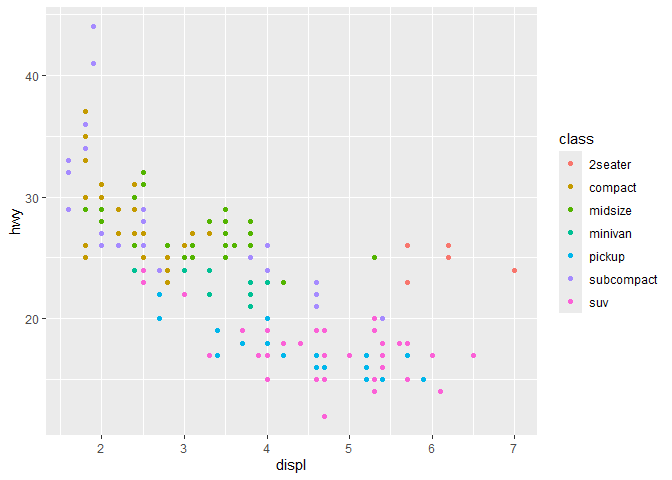

The goal of rminkav3 is access Minka observations through the API.
Installation
You can install the development version of rminkav3 from GitHub with:
# install.packages("pak")
pak::pak("Development-BioMarine/rminkav3")Usage
It’s hard to succinctly describe how ggplot2 works because it embodies a deep philosophy of visualisation. However, in most cases you start with ggplot(), supply a dataset and aesthetic mapping (with aes()). You then add on layers (like geom_point() or geom_histogram()), scales (like scale_colour_brewer()), faceting specifications (like facet_wrap()) and coordinate systems (like coord_flip()).
 ## Using rminka
If you are new to ggplot2 you are better off starting with a systematic introduction, rather than trying to learn from reading individual documentation pages. Currently, there are three good places to start:
The [Data Visualization][r4ds-vis] and [Communication][r4ds-comm] chapters in [R for Data Science][r4ds]. R for Data Science is designed to give you a comprehensive introduction to the tidyverse, and these two chapters will get you up to speed with the essentials of ggplot2 as quickly as possible.
If you’d like to take an online course, try Data Visualization in R With ggplot2 by Kara Woo.
If you’d like to follow a webinar, try Plotting Anything with ggplot2 by Thomas Lin Pedersen.
If you want to dive into making common graphics as quickly as possible, I recommend [The R Graphics Cookbook][cookbook] by Winston Chang. It provides a set of recipes to solve common graphics problems.
If you’ve mastered the basics and want to learn more, read ggplot2: Elegant Graphics for Data Analysis. It describes the theoretical underpinnings of ggplot2 and shows you how all the pieces fit together. This book helps you understand the theory that underpins ggplot2, and will help you create new types of graphics specifically tailored to your needs.
Getting help
There are two main places to get help with ggplot2:
The RStudio community is a friendly place to ask any questions about ggplot2.
[Stack Overflow][so] is a great source of answers to common ggplot2 questions. It is also a great place to get help, once you have created a reproducible example that illustrates your problem.
For more information go to Minkar website